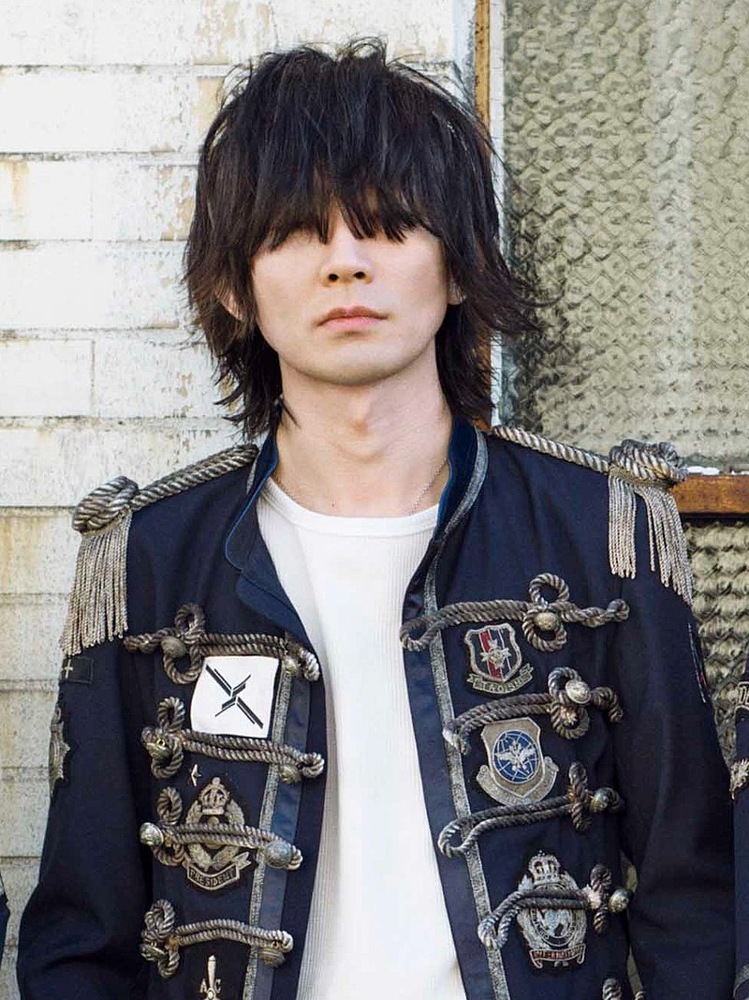

藤原基央
藤原 基央（ふじわら もとお、1979年4月12日 - ）は、日本のミュージシャン、シンガーソングライター。
ロックバンド・BUMP OF CHICKENのボーカリスト兼ギタリスト。
千葉県佐倉市出身。
愛称は「藤くん」
BUMP OF CHICKENのほぼ全曲の作詞・作曲を担当している
高校生の頃に先輩のバンドの助っ人ギタリストとしてメタリカやメガデスのコピーをやっていたことがある。
中学3年生の頃ドラムスの升秀夫に誘われ、自分が実行委員会の副委員長だった文化祭で現在のBUMP OF CHICKENの母体バンド「ハゲバンド」（藤原、直井、升、“あいつ”（増川はスタッフとして参加）での初となるライブを決行（「ツイスト・アンド・シャウト」等をカバー）。
中学卒業後も頻繁にメンバーと会って自作曲を書き始めるが、進学した日出学園高等学校では、高校1年生の秋に中退。
そのため家に家賃（5万円）を入れる事となるが、アルバイトは長くは続かず、家に5万も入れるぐらいなら同じ5万円のアパートに住んだほうがいいと思って16歳のとき上京した。
増川 弘明(Gt.)
・増川 弘明（ますかわ ひろあき、1979年12月20日 - ）は、日本のギタリスト。ロックバンド・BUMP OF CHICKENのギタリスト。
・千葉県佐倉市出身。
・臼井幼稚園ではのちのBUMP OF CHICKENのメンバー全員と出会った。
・愛称は「ヒロ」で、メンバーやファンからも「ヒロ」と呼ばれることが多いが、以前は「ホセ」や「ニッケ」と呼ばれることがあった。
・行きつけの洋食屋を閉業直前に訪れたところ、お笑いコンビ・オードリーの若林正恭と偶然相席になり、相席したテーブルの代金全てを支払って帰ったというエピソードを持つ。
直井由文
直井 由文(Ba.)
直井 由文（なおい よしふみ、1979年10月9日 - ）は、日本のベーシスト。ロックバンド・BUMP OF CHICKENのベーシスト。
プロ入りの旨を居酒屋を経営する父に相談したところ「18歳までに大検と調理師免許を取ったら好きにしていい」と言われ、高校へは進学せずに調理専門学校へ通い、調理師免許を取得した。
升秀夫
升 秀夫(Dr.)
升 秀夫（ます ひでお、1979年8月10日 - ）は、日本のドラマー。ロックバンド・BUMP OF CHICKENのドラマー 。
BUMP OF CHICKEN結成の立役者である。
友人にゴミ捨て場にドラム（パール製）が捨ててあると聞きそれを拾い、ドラム担当となる
「彼がドラムを拾わなかったらこのバンドは結成されていなかった」とメンバーは口を揃えている。